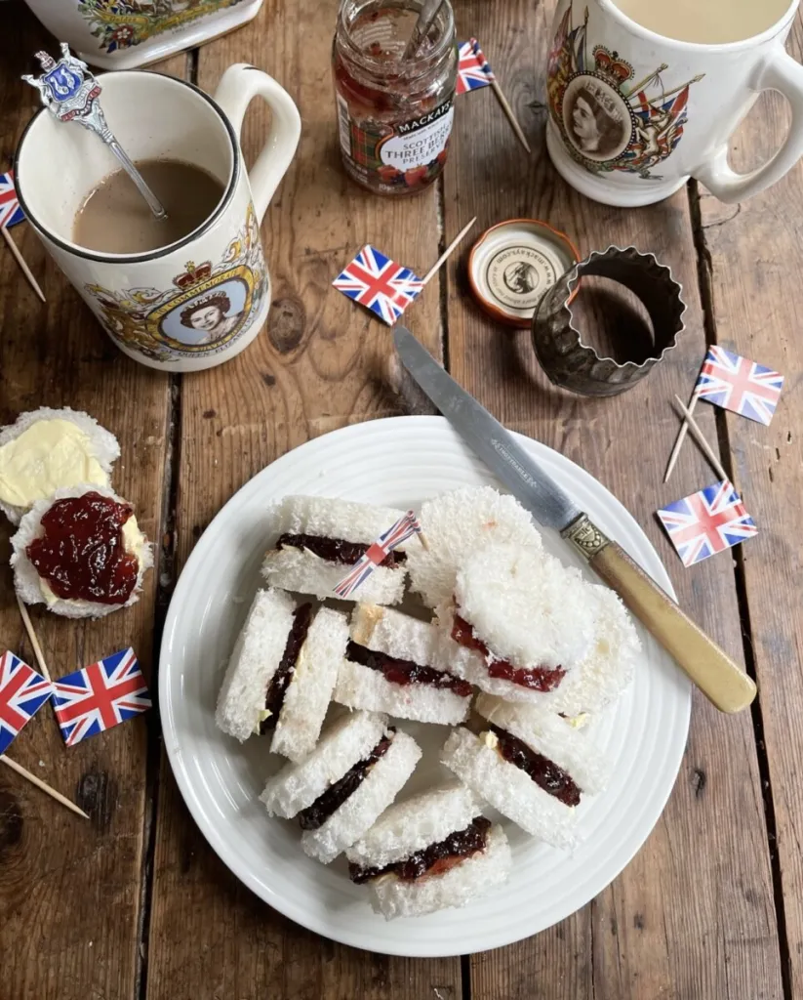

Jam Pennies
Sweet, luxurious, jam stuffed between two pieces of fluffy, soft, pillow like bread.
This tender, beautiful, tea sandwich will brighten anyones day.
This indulgent dessert is filled with butter and natural raspberry jam.
Best served with soft white bread, these lovely sandwiches will make anyone fall in love with you.
Ingredients
Jam Pennies
- 12 slices of white bread.
- Softened unsalted butter
- 6 tablespoons of raspberry jam.
Steps
- Cut the crusts off the sliced bread and put to one side for breadcrumbs or bread pudding.
- Stamp out little rounds of bread with a scone/biscuit/pastry cutter, smaller is best.
- Spread the crust-less sliced bread with the butter on one side only, just as if you were making normal sandwiches.
- Spread the jam of your choice over one side of the buttered bread and then sandwich together with another buttered slice.
- Arrange the jam pennies on a plate alongside a pot of tea and other tea time treats.